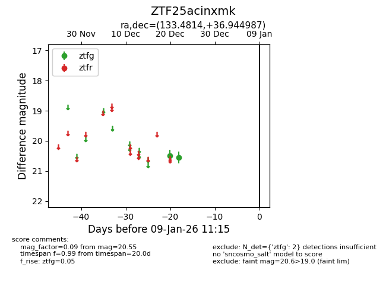
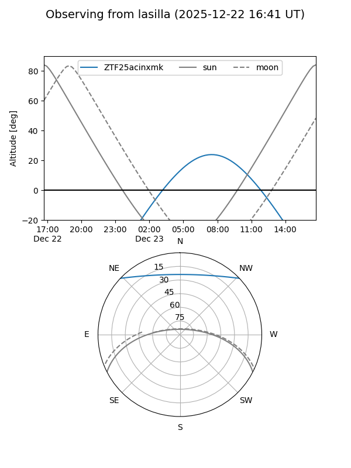

ZTF25acinxmk
Target ZTF25acinxmk at 2025-12-31 18:00
Aliases and brokers:
FINK: link
Lasair: link
ALeRCE: link
alt names
ZTF25acinxmk (ztf,fink_ztf)
Coordinates:
equatorial (ra, dec) = 133.4814,+36.94499
equatorial (HMS+DMS) = 08:53:55.54,+36:56:41.95
galactic (l, b) = (186.0070,+39.52231)
Flags:
Photometry:
last ztfg=20.55
2 ztfg detections
Lightcurve

Visibility


Additional plots